건축기사 (2019-09-21 기출문제)
1과목: 건축계획
1. 공장의 레이아웃 형식 중 생산에 필요한 모든 공정과 기계류를 제품의 흐름에 따라 배치하는 형식은?
- 고정식 레이아웃
- 혼성식 레이아웃
- 제품중심의 레이아웃
- 공정중심의 레이아웃
(정답률: 81%)

2. 사무소 건축의 코어 계획에 관한 설명으로 옳지 않은 것은?
- 코어부분에는 계단실도 포함시킨다.
- 코어 내의 각 공간은 각 층마다 공통의 위치에 두도록 한다.
- 코어 내의 화장실은 외부 방문객이 잘 알 수 없는 곳에 배치한다.
- 엘리베이터 홀은 출입구문에 근접시키지 않고 일정한 거리를 유지하도록 한다.
(정답률: 91%)
3. 미술관의 전시실 순회형식 중 많은 실을 순서별로 통해야 하고, 1실을 폐쇄할 경우 전체 동선이 막히게 되는 것은?
- 중앙홀 형식
- 연속순회형식
- 갤러리(gallery) 형식
- 코리더(corridor) 형식
(정답률: 92%)
4. 상점 매장의 가구배치에 따른 평면 유형에 관한 설명으로 옳지 않은 것은?
- 직렬형은 부분별로 상품 진열이 용이하다.
- 굴절형은 대면판매 방식만 가능한 유형이다.
- 환상형은 대면판매와 측면판매 방식을 병형 할 수 있다.
- 복합형은 서점, 패션점, 악세사리점 등의 상점에 적용이 가능하다.
(정답률: 80%)
5. 다음의 공동주택 평면형식 중 각 주호의 프라이버시와 거주성이 가장 양호한 것은?
- 계단실형
- 중복도형
- 편복도형
- 집중형
(정답률: 82%)
6. 다음은 극장의 가시거리에 관한 설명이다. ( )안에 알맞은 것은?
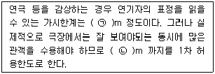
- ㉠ 15, ㉡ 22
- ㉠ 20, ㉡ 35
- ㉠ 22, ㉡ 35
- ㉠ 22, ㉡ 38
(정답률: 89%)
7. 사무소 건축에서 엘리베이터 계획 시 고려되는 승객 집중시간은?
- 출근 시 상승
- 출근 시 하강
- 퇴근 시 상승
- 퇴근 시 하강
(정답률: 90%)
8. 도서관 출납시스템에 관한 설명으로 옳지 않은 것은?
- 폐가식은 서고와 열람실이 분리되어 있다.
- 반개가식은 새로 출간된 신간 서적 안내에 채용된다.
- 안전개가식은 서가 열람이 가능하여 도서를 직접 뽑을 수 있다.
- 자유개가식은 이용자가 자유롭게 도서를 꺼낼 수 있으나 열람석으로 가기 전에 관원에게 체크를 받는 형식이다.
(정답률: 83%)
9. 1주간의 평균 수업시간이 30시간인 어느 학교에서 설계제도교실이 사용되는 시간은 24시간이다. 그 중 6시간은 다른 과목을 위해 사용된다고 할 때, 설계제도교실의 이용률과 순수율은?
- 이용률 80%, 순수율 25%
- 이용률 80%, 순수율 75%
- 이용률 60%, 순수율 25%
- 이용률 60%, 순수율 75%
(정답률: 83%)
10. 메조넷형 아파트에 관한 설명으로 옳지 않은 것은?
- 다양한 평면구성이 가능하다.
- 소규모 주택에서는 비경제적이다.
- 편복도형일 경우 프라이버시가 양호하다.
- 복도와 엘리베이터홀은 각 층마다 계획된다.
(정답률: 75%)
11. 극장의 평면형식에 관한 설명으로 옳지 않은 것은?
- 오픈스테이지형은 무대장치를 꾸미는데 어려움이 있다.
- 프로시니엄형은 객석 수용 능력에 있어서 제한을 받는다.
- 가변형 무대는 필요에 따라서 무대와 객석을 변화시킬 수 있다.
- 애리나형은 무대 배경설치 비용이 많이 소요된다는 단점이 있다.
(정답률: 87%)
12. 학교 건축에서 단층 교사에 관한 설명으로 옳지 않은 것은?
- 내진∙내풍구조가 용이하다.
- 학습 활동을 실외로 연장할 수 있다.
- 계단이 필요없으므로 재해 시 피난이 용이하다.
- 설비 등을 집약할 수 있어서 치밀한 평면계획이 용이하다.
(정답률: 88%)
13. 주택의 부엌가구 배치 유형에 관한 설명으로 옳지 않은 것은?
- L자형은 부엌과 식당을 겸할 경우 많이 활용된다.
- ㄷ자형은 작업공간이 좁기 때문에 작업효율이 나쁘다.
- 일(-)자형은 좁은 면적 이용에 효과적이므로 소규모 부엌에 주로 사용된다.
- 병렬형은 작업 동선은 줄일 수 있지만 작업시 몸을 앞뒤로 바꿔야 하므로 불편하다.
(정답률: 84%)
14. 장애인∙노인∙임산부 등의 편의증진 보장에 관한 법령에 따른 편의시설 중 매개시설에 속하지 않는 것은?
- 주출입구접근로
- 유도 및 안내설비
- 장애인전용주차구역
- 주출입구높이차이제거
(정답률: 76%)
15. 한국 고대 사찰배치 중 1탑 3금당 배치에 속하는 것은?
- 미륵사지
- 불국사지
- 정림사지
- 청암리사지
(정답률: 59%)
16. 상점계획에 관한 설명으로 옳지 않은 것은?
- 고객의 동선은 일반적으로 짧을수록 좋다.
- 점원의 동선과 고객의 동선은 서로 교차되지 않는 것이 바람직하다.
- 대면판매형식은 일반적으로 시계, 귀금속, 의약품 상점 등에서 쓰여 진다.
- 쇼 케이스 배치 유형 중 직렬형은 다른 유형에 비하여 상품의 전달 및 고객의 동선상 흐름이 빠르다.
(정답률: 88%)
17. 그리스 아테네 아크로폴리스에 관한 설명으로 옳지 않은 것은?
- 프로필리어는 아크로폴리스로 들어가는 입구 건물이다.
- 에렉테이온 신전은 이오닉 양식의 대표적인 신전으로 부정형 평면으로 구성되어 있다.
- 니케 신전은 순수한 코린트식 양식으로서 페르시아와의 전쟁의 승리기념으로 세워졌다.
- 파르테논 신전은 도릭 양식의 대표적인 신전으로서 그리스 고전건축을 대표하는 건물이다.
(정답률: 59%)
18. 다음 중 건축가와 작품의 연결이 옳지 않은 것은?
- 르 꼬르뷔지에(Le Corbusier) - 롱샹 교회
- 월터 그로피우스(Walter Gropius) - 아테네 미국대사관
- 프랭크 로이드 라이트(Frank Lloyd Wright) - 구겐하임 미술관
- 미스 반 데르 로에(Mies Van der Rohe) - M.I.T 공대 기숙사
(정답률: 66%)
19. 주거단지의 각 도로에 관한 설명으로 옳지 않은 것은?
- 격자형 도로는 교통을 균등 분산시키고 넓은 지역을 서비스할 수 있다.
- 선형 도로는 폭이 넓은 단지에 유리하고 한쪽 측면의 단지만을 서비스할 수 있다.
- 루프(loop)형은 우회도로가 없는 쿨데삭(cul-de-sac)형의 결점을 개량하여 만든 유형이다.
- 쿨데삭(cul-de-sac)형은 통과교통을 방지함으로써 주거환경의 쾌적성과 안정성을 모두 확보할 수 있다.
(정답률: 77%)
20. 다음은 주택의 기준척도에 관한 설명이다. ( )안에 알맞은 것은?
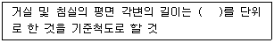
- 5cm
- 10cm
- 15cm
- 30cm
(정답률: 78%)
2과목: 건축시공
21. 콘크리트의 균열을 발생시기에 따라 구분할 때 경화 후 균열의 원인에 해당되지 않는 것은?
- 알칼리 골재 반응
- 동결융해
- 탄산화
- 재료분리
(정답률: 67%)
22. 도막방수에 관한 설명으로 옳지 않은 것은?
- 복잡한 형상에 대한 시공성이 우수하다.
- 용제형 도막방수는 시공이 어려우나 충격에 매우 강하다.
- 에폭시계 도막방수는 접착성, 내열성, 내마모성, 내약품성이 우수하다.
- 셀프레벨링공법은 방수 바닥에서 도료상태의 도막재를 바닥에 부어 도포한다.
(정답률: 66%)
23. 다음과 같은 원인으로 인하여 발생하는 용접 결함의 종류는?
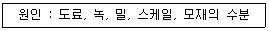
- 피트
- 언더컷
- 오버랩
- 엔드탭
(정답률: 68%)
24. 터파기 공사 시 지하수위가 높으면 지하수에의한 피해가 우려되므로 차수공사를 실시하며, 이 방법만으로 부족할 때에는 강제배수를 실시하게 되는데 이 때 나타나는 현상으로 옳지 않은 것은?
- 점성토의 압밀
- 주변침하
- 흙막이 벽의 토압감소
- 주변우물의 고갈
(정답률: 54%)
25. 일반경쟁입찰의 업무순서에 따라 보기의 항목을 옳게 나열한 것은?
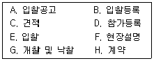
- A→B→F→D→C→E→G→H
- A→D→F→C→B→E→G→H
- A→B→C→F→D→G→E→H
- A→D→C→F→E→G→B→H
(정답률: 72%)
26. TQC를 위한 7가지 도구 중 다음 설명에 해당하는 것은?
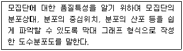
- 히스토그램
- 특성요인도
- 파레토도
- 체크시트
(정답률: 71%)
27. 경량형 강재의 특징에 관한 설명으로 옳지 않은 것은?
- 경량형 강재는 중량에 대한 단면 계수, 단면 2차 반경이 큰 것이 특징이다.
- 경량형 강재는 일반구조용 열간 압연한 일반형 강재에 비하여 단면형이 크다.
- 경량형 강재는 판두께가 얇지만 판의 국부 좌굴이나 국부 변형이 생기지 않아 유리하다.
- 일반구조용 열간 압연한 일반형 강재에 비하여 판두께가 얇고 강재량이 적으면서 휨강도는 크고 좌굴 강도도 유리하다.
(정답률: 67%)
28. 거푸집에 작용하는 콘크리트의 측압에 끼치는 영향요인과 가장 거리가 먼 것은?
- 거푸집의 강성
- 콘크리트 타설 속도
- 기온
- 콘크리트의 강도
(정답률: 61%)
29. 건설 프로세스의 효율적인 운영을 위해 형성된 개념으로 건설생산에 초점을 맞추고 이에 관련된 계획, 관리, 엔지니어링, 설계, 구매, 계약, 시공, 유지 및 보수 등의 요소들을 주요 대상으로 하는 것은?
- CIC(Computer Integrated Construction)
- MIS(Management Information System)
- CIM(Computer Integrated Manufacturing)
- CAM(Computer Aided Manufacturing)
(정답률: 78%)
30. 경량기포콘크리트(ALC)에 관한 설명으로 옳지 않은 것은?
- 기건 비중은 보통 콘크리트의 약 1/4 정도로 경량이다.
- 열전도율은 보통 콘크리트의 약 1/10정도로서 단열성이 우수하다.
- 유기질 소재를 주원료로 사용하여 내화성능이 매우 낮다.
- 흡음성과 차음성이 우수하다.
(정답률: 71%)
31. 실의 크기 조절이 필요한 경우 칸막이 기능을 하기 위해 만든 병풍 모양의 문은?
- 여닫이문
- 자재문
- 미서기문
- 홀딩 도어
(정답률: 72%)
32. 타일 108mm 각으로, 줄눈을 5mm로 벽면 6m2 를 붙일 때 필요한 타일의 장수는? (단, 정미량으로 계산)
- 350장
- 400장
- 470장
- 520장
(정답률: 65%)
33. 수장공사 적산 시 유의사항에 관한 설명으로 옳지 않은 것은?
- 수장공사는 각종 마감재를 사용하여 바닥 벽 천장을 치장하므로 도면을 잘 이해하여야 한다.
- 최종 마감재만 포함하므로 설계도서를 기준으로 각종 부속공사는 제외하여야 한다.
- 마무리 공사로서 자재의 종류가 다양하게 포함되므로 자재별로 잘 구분하여 시공 및 관리하여야 한다.
- 공사범위에 따라서 주자재, 부자재, 운반등을 포함하고 있는지 파악하여야 한다.
(정답률: 81%)
34. 평판재하시험에 관한 설명으로 옳지 않은 것은?(문제 오류로 가답안 발표시 3번으로 발표되었지만 확정답안 발표시 1, 2, 3번이 정답처리 되었습니다. 여기서는 가답안인 3번을 누르면 정답 처리 됩니다.)
- 재하판의 크기는 45cm각을 사용한다.
- 침하의 증가가 2시간에 0.1mm이하가 되면 정지한것으로 판정한다.
- 시험할 장소에서의 즉시침하를 방지하기 위하여 다짐을 실시한 후 시작한다.
- 지반의 허용지지력을 구하는 것이 목적이다.
(정답률: 80%)
35. 석재의 표면 마무리의 갈기 및 광내기에 사용하는 재료가 아닌 것은?
- 금강사
- 황산
- 숫돌
- 산화주석
(정답률: 70%)
36. 건축주가 시공회사의 신용, 자산, 공사경력, 보유기자재 등을 고려하여 그 공사에 적격한 하나의 업체를 지명하여 입찰시키는 방법은?
- 공개경쟁입찰
- 제한경쟁입찰
- 지명경쟁입찰
- 특명입찰
(정답률: 73%)
37. 서로 다른 종류의 금속재가 접촉하는 경우 부식이 일어나는 경우가 있는데 부식성이 큰 금속 순으로 옳게 나열된 것은?
- 알루미늄 ＞ 철 ＞ 주석 ＞ 구리
- 주석 ＞ 철 ＞ 알루미늄 ＞ 구리
- 철 ＞ 주석 ＞ 구리 ＞ 알루미늄
- 구리 ＞ 철 ＞ 알루미늄 ＞ 주석
(정답률: 67%)
38. 스프레이 도장방법에 관한 설명으로 옳지 않은 것은?
- 도장거리는 스프레이 도장면에서 150mm를 표준으로 하고 압력에 따라 가감한다.
- 스프레이할 때에는 매끈한 평면을 얻을 수 있도록 하고, 항상 평행이동하면서 운행의 한 줄마다 스프레이 너비의 1/3 정도를 겹쳐 뿜는다.
- 각 회의 스프레이 방향은 전회의 방향에 직각으로 한다.
- 에어레스 스프레이 도장은 1회 도장에 두꺼운 도막을 얻을 수 있고 짧은 시간에 넓은 면적을 도장할 수 있다.
(정답률: 63%)
39. 창호철물 중 여닫이 문에 사용하지 않는 것은?
- 도어 행거(door hanger)
- 도어 체크(door check)
- 실린더 록(cylinder lock)
- 플로어 힌지(floor hinge)
(정답률: 51%)
40. 아스팔트 방수공사에 관한 설명으로 옳지 않은 것은?
- 아스팔트 프라이머는 건조하고 깨끗한 바탕면에 솔, 롤러, 뿜칠기 등을 이용하여 규정량을 균일하게 도포한다.
- 용융 아스팔트는 운반용 기구로 시공 장소까지 운반하여 방수 바탕과 시트재 사이에 롤러, 주걱 등으로 뿌리면서 시트재를 깔아 나간다.
- 옥상에서의 아스팔트 방수 시공 시 평탄부에서의 방수 시트깔기 작업 후 특수부위에 대한 보강붙이기를 시행한다.
- 평탄부에서는 프라이머의 적절한 건조상태를 확인하여 시트를 깐다.
(정답률: 60%)
3과목: 건축구조
41. 다음 그림과 같은 라멘의 부정정차수는?
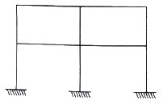
- 6차 부정정
- 8차 부정정
- 10차 부정정
- 12차 부정정
(정답률: 70%)
42. 1단은 고정, 1단은 자유인 길이 10m인 철골기둥에서 오일러의 좌굴하중은? (단, A = 6000mm2, Ix = 4000cm4, Iy = 2000cm4, E = 2⑤000MPa)
- 101.2kN
- 168.4kN
- 195.7kN
- 202.4kN
(정답률: 35%)
43. 다음 그림과 같은 보에서 중앙점(C점)의 휨모멘트 (Mc)를 구하면?
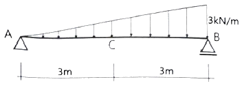
- 4.50 kN·m
- 6.75 kN·m
- 8.00 kN·m
- 10.50 kN·m
(정답률: 59%)
44. 그림과 같은 단면에서 x-x축에 대한 단면2차반경으로 옳은 것은?
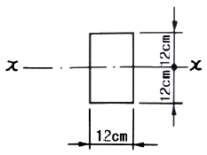
- 5.5cm
- 6.9cm
- 7.7cm
- 8.1cm
(정답률: 62%)
45. 스팬이 ℓ고 양단이 고정인 보의 전체에 등분포하중 w가 작용할 때 중앙부의 최대 처짐은?
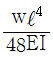
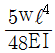
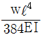
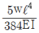
(정답률: 36%)
46. 철근콘크리트의 보강철근에 관한 설명으로 옳지 않은 것은?
- 보강철근으로 보강하지 않은 콘크리트는 연성거동을 한다.
- 보강철근은 콘크리트의 크리프를 감소시키고 균열의 폭을 최소화시킨다.
- 이형철근은 원형강봉의 표면에 돌기를 만들어 철근과 콘크리트의 부착력을 최대가 되도록 한 것이다.
- 보강철근을 콘크리트 속에 매립합으로써 콘크리트의 휨강도를 증대시킨다.
(정답률: 56%)
47. 강도설계법 적용 시 그림과 같은 단철근 직사각형보 단면의 공칭휨강도 Mn은? (단, fck = 21MPa, fy = 400MPa, As = 1200mm2)
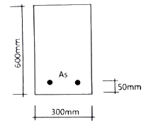
- 162 kN·m
- 182 kN·m
- 202 kN·m
- 242 kN·m
(정답률: 33%)
48. 철근의 정착길이에 관한 사항으로 옳지 않은 것은?
- 인장이형철근 및 이형철선의 정착길이 ld는 항상 300mm이상이어야 한다.
- 압축이형철근의 정착길이 ld는 항상 150mm이상이어야 한다.
- 인장 또는 압축을 받는 하나의 다발철근 내에 잇는 개개 철근의 정착길이 ld는 다발철근이 아닌 경우의 각 철근의 정착길이보다 3개의 철근으로 구성된 다발철근에 대해서 20% 증가시켜야 한다.
- 단부에 표준갈고리를 갖는 인장이형철근의 정착길이 ldh는 항상 8db 이상 또한 150mm이상이어야 한다.
(정답률: 53%)
49. 강도설계법에 의한 철근콘크리트보 설계에서 양단연속인 경우 처짐을 계산하지 않아도 되는 보의 최소 두께로 옳은 것은? (단, 보통콘크리트 ωc = 2,300 kg/m3 와 설계기준항복강도 400MPa 철근을 사용)
- ℓ/16
- ℓ/21
- ℓ/24
- ℓ/28
(정답률: 55%)
50. 내진설계에 있어서 밑면전단력 산정인자가 아닌 것은?
- 건물의 중요도 계수
- 반응수정계수
- 진도계수
- 유효건물중량
(정답률: 39%)
51. 그림과 같은 구조에서 B단에 발생하는 모멘트는?
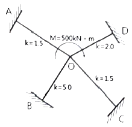
- 125 kN·m
- 188 kN·m
- 250 kN·m
- 300 kN·m
(정답률: 67%)
52. 다음 그림과 같은 구멍 2열에 대하여 파단선 A-B-C를 지나는 순단면적과 동일한 순단면적을 갖는 파단선 D-E-F-G의 피치(s)는? (단, 구멍은 여유폭을 포함하여 23mm임)
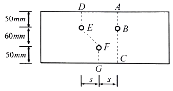
- 3.7cm
- 7.4cm
- 11.1cm
- 14.8cm
(정답률: 58%)
53. 원형단면에 전단력 S = 30kN 이 작용할 때 단면의 최대 전단응력도는? (단, 단면의 반경은 180mm이다.)
- 0.19 MPa
- 0.24 MPa
- 0.39 MPa
- 0.44 MPa
(정답률: 43%)
54. 다음 그림과 같은 부정정보에서 고정단모멘트 MAB(CAB)의 절대값은?
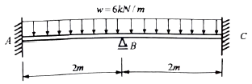
- 2 kN·m
- 3 kN·m
- 4 kN·m
- 5 kN·m
(정답률: 37%)
55. 그림과 같은 보의 C점에서의 최대처짐은?
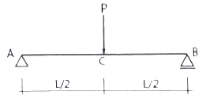
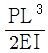
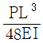
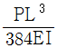
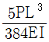
(정답률: 63%)
56. 바닥슬래브와 철골보 사이에 발생하는 전단력에 저항하기 위해 설치하는 것은?
- 커버 플레이트(cover plate)
- 스티프너(stiffener)
- 턴버클(turn buckle)
- 쉬어 커넥터(shear connector)
(정답률: 51%)
57. 말뚝기초에 관한 설명으로 옳지 않은 것은?
- 말뚝기초는 지반이 연약하고 기초상부의 하중을 직접 지반에 전달하며 주위 흙과의 마찰력은 고려하지 않는다.
- 지지말뚝은 굳은 지반까지 말뚝을 박아 하중을 직접 지반에 전달하며 주위 흙과의 마찰력은 고려하지 않는다.
- 마찰말뚝은 주위 흙과의 마찰력으로 지지되며 n개를 박았을 때 그 지지력은 n배가 된다.
- 동일 건물에서는 서로 다른 종류의 말뚝을 혼용하지 않는다.
(정답률: 57%)
58. 철골트러스의 특성에 관한 설명으로 옳지 않은 것은?
- 직선 부재들이 삼각형의 형태로 구성되어 안정적인 거동을 한다.
- 트러스의 개방된 웨브공간으로 전기배선이나 덕트등과 같은 설비배관의 통과가 가능하다.
- 부정정차수가 낮은 트러스의 경우에는 일부 부재나 접합부의 파괴가 트러스의 붕괴를 야기할 수 있다.
- 직선 부재로만 구성되기 때문에 비정형 건축물의 구조체에는 적용되지 않는다.
(정답률: 71%)
59. 아래 단면을 가진 철근콘크리트 기둥의 최대 설계축하중(øPn)은? (단, fck = 30 MPa, fy = 400 MPa)
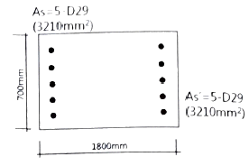
- 12958 kN
- 15425 kN
- 17958 kN
- 21425 kN
(정답률: 51%)
60. 철골구조 주각부의 구성요소가 아닌 것은?
- 커버 플레이트
- 앵커볼트
- 베이스 모르타르
- 베이스 플레이트
(정답률: 52%)
4과목: 건축설비
61. 실내공기오염의 종합적 지표로서 사용되는 오염 물질은?
- 부유분진
- 이산화탄소
- 일산화탄소
- 이산화질소
(정답률: 75%)
62. 전기 샤프트(ES)에 관한 설명으로 옳지 않은 것은?
- 전기 샤프트(ES는 각 층마다 같은 위치에 설치한다.
- 전기 샤프트(ES)의 면적은 보, 기둥부분을 제외하고 산정한다.
- 전기 샤프트(ES)는 전력용(EPS)과 정보통신용(TPS)을 공용으로 설치하는 것이 원칙이다.
- 전기 샤프트(ES)의 점검구는 유지보수시 기기의 반입 및 반출이 가능하도록 하여야 한다.
(정답률: 72%)
63. 기온, 습도, 기류의 3요소의 조합에 의한 실내 온열감각을 기온의 척도로 나타낸 것은?
- 작용온도
- 등가온도
- 유효온도
- 등온지수
(정답률: 61%)
64. 증기난방에 관한 설명으로 옳지 않은 것은?
- 온수난방에 비해 예열시간이 짧다.
- 온수난방에 비해 한랭지에서 동결의 우려가 적다.
- 운전 시 증기해머로 인한 소음을 일으키기 쉽다.
- 온수난방에 비해 부하변동에 따른 실내방열량의 제어가 용이하다.
(정답률: 76%)
65. 조명설비에서 눈부심에 관한 설명으로 옳지 않은 것은?
- 광원의 크기가 클수록 눈부심이 강하다.
- 광원의 휘도가 작을수록 눈부심이 강하다.
- 광원이 시선에 가까울수록 눈부심이 강하다.
- 배경이 어둡고 눈이 암순응될수록 눈부심이 강하다.
(정답률: 79%)
66. 주철제 보일러에 관한 설명으로 옳지 않은 것은?
- 재질이 약하여 고압으로는 사용이 곤란하다.
- 섹션(section)으로 분할되므로 반입이 용이하다.
- 재질이 주철이므로 내식성이 약하여 수명이 짧다.
- 규모가 비교적 작은 건물의 난방용으로 사용된다.
(정답률: 66%)
67. 배수트랩에 관한 설명으로 옳지 않은 것은?
- 트랩은 이중으로 설치하면 효과적이다.
- 트랩의 봉수깊이가 너무 깊으면 통수능력이 감소된다.
- 트랩은 하수가스의 실내 침입을 방지하는 역할을 한다.
- 트랩은 위생기구에 가능한 한 접근시켜 설치하는 것이 좋다.
(정답률: 62%)
68. 다음 설명에 알맞은 냉동기는?
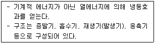
- 터보식 냉동기
- 흡수식 냉동기
- 스크류식 냉동기
- 왕복동식 냉동기
(정답률: 80%)
69. 액화천연가스(LNG)에 관한 설명으로 옳지 않은 것은?
- 공기보다 가볍다.
- 무공해, 무독성이다.
- 프로필렌, 부탄, 에탄이 주성분이다.
- 대규모의 저장시설을 필요로 하며, 공급은 배관을 통하여 이루어진다.
(정답률: 71%)
70. 수량 22.4 m3/h 를 양수하는데 필요한 터빈 펌프의 구경으로 적당한 것은? (단, 터빈 펌프 내의 유속은 2m/s로 한다.)
- 65mm
- 75mm
- 100mm
- 125mm
(정답률: 36%)
71. 건축물의 에너지절약설계기준에 따른 건축물의 단열을 위한 권장사항으로 옳지 않은 것은?
- 외벽 부위는 내단열로 시공한다.
- 열손실이 많은 북측 거실의 창 및 문의 면적은 최소화한다.
- 외피의 모서리 부분은 열교가 발생하지 않도록 단열재를 연속적으로 설치한다.
- 발코니 확장을 하는 공동주택에는 단열성이 우수한 로이(Low-E) 복층창이나 삼중창이상의 단열성능을 갖는 창을 설치한다.
(정답률: 73%)
72. 전류가 흐르고 있는 전자기기, 배선과 관련된 화재를 의미하는 것은?
- A급 화재
- B급 화재
- C급 화재
- K급 화재
(정답률: 65%)
73. 다음 중 엘리베이터의 안전장치와 가장 관계가 먼 것은?
- 조속기
- 핸드 레일
- 종점 스위치
- 전자 브레이크
(정답률: 74%)
74. 다음 중 변전실 면적에 영향을 주는 요소와 가장 거리가 먼 것은?
- 발전기실의 면적
- 변전설비 변압방식
- 수전전압 및 수전방식
- 설치 기기와 큐비클의 종류
(정답률: 70%)
75. 배관재료에 관한 설명으로 옳지 않은 것은?
- 주철관은 오배수관이나 지중 매설 배관에 사용된다.
- 경질염화비닐관은 내식성은 우수하나 충격에 약하다.
- 연관은 내식성이 작아 배수용보다는 난방배관에 주로 사용된다.
- 동관은 전기 및 열전도율이 좋고 전성 연성이 풍부하며 가공도 용이하다.
(정답률: 55%)
76. 공기조화방식 중 팬코일 유닛방식에 관한 설명으로 옳지 않은 것은?
- 각 실에 수배관으로 인한 누수의 우려가 있다.
- 덕트 샤프트나 스페이스가 필요없거나 작아도 된다.
- 각 실의 유닛은 수동으로도 제어할 수 있고, 개별제어가 쉽다.
- 유닛을 창문 밑에 설치하면 콜드 드래프트(cold draft)가 발생할 우려가 높다.
(정답률: 60%)
77. 다음 그림과 같은 형태를 갖는 간선의 배선 방식은?
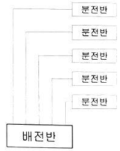
- 개별방식
- 루프방식
- 병용방식
- 나뭇가지방식
(정답률: 72%)
78. 실내의 탄산가스 허용농도가 1000ppm, 외기의 탄산가스 농도가 400ppm 일 때, 실내 1인당 필요한 환기량은? (단, 실내 1인당 탄산가스 배출량은 15L/h 이다.)
- 15 m3/h
- 20 m3/h
- 25 m3/h
- 30 m3/h
(정답률: 58%)
79. 펌프의 양수량이 10m3/min , 전양정이 10m, 효율이 80%일 때, 이 펌프의 축동력은?
- 20.4 kW
- 22.5 kW
- 26.5 kW
- 30.6 kW
(정답률: 50%)
80. 최대수요전력을 구하기 위한 것으로 총 부하 설비용량에 대한 최대수요전력의 비율을 백분율로 나타낸 것은?
- 역률
- 수용률
- 부등률
- 부하율
(정답률: 61%)
5과목: 건축법규
81. 특별피난계단의 구조에 관한 기준 내용으로 옳지 않은 것은?
- 계단실에는 예비전원에 의한 조명설비를 할 것
- 계단은 내화구조로 하되, 피난층 또는 지상까지 직접 연결되도록 할 것
- 출입구의 유효너비는 0.9m 이상으로 하고 피난의 방향으로 열 수 있을 것
- 계단실의 노대 또는 부속실에 접하는 창문은 그 면적을 각각 3m2 이하로 할 것
(정답률: 70%)
82. 그림과 같은 일반 건축물의 건축면적은? (단, 평면도 건물 치수는 두께 300mm인 외벽의 중심치수이고, 지붕선 치수는 지붕외곽선 치수임)
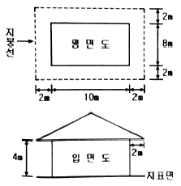
- 80 m2
- 100 m2
- 120 m2
- 168 m2
(정답률: 69%)
83. 다음은 대지의 조경에 관한 기준 내용이다. ( )안에 알맞은 것은?
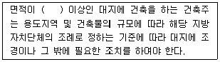
- 100 m2
- 200 m2
- 300 m2
- 500 m2
(정답률: 72%)
84. 건축법령상 초고층 건축물의 정의로 옳은 것은?
- 층수가 30층 이상이거나 높이나 90m 이상인 건축물
- 층수가 30층 이상이거나 높이가 120m 이상인 건축물
- 층수가 50층 이상이거나 높이가 150m 이상인 건축물
- 층수가 50층 이상이거나 높이가 200m 이상인 건축물
(정답률: 71%)
85. 건축물의 거실에 건축물의 설비기준 등에 관한 규칙에 따라 배연설비를 설치하여야 하는 대상 건축물에 속하지 않는 것은? (단, 피난층의 거실은 제외)
- 6층 이상인 건축물로서 창고시설의 용도로 쓰는 건축물
- 6층 이상인 건축물로서 운수시설의 용도로 쓰는 건축물
- 6층 이상인 건축물로서 위락시설의 용도로 쓰는 건축물
- 6층 이상인 건축물로서 종교시설의 용도로 쓰는 건축물
(정답률: 52%)
86. 비상용승강기의 승강장의 구조에 관한 기준 내용으로 옳지 않은 것은?
- 채광이 되는 창문이 있거나 예비전원에 의한 조명설비를 할 것
- 벽 및 반자가 실내에 접하는 부분의 마감 재료는 불연재로로 할 것
- 피난층이 있는 승강장의 출입구로부터 도로 또는 공지에 이르는 거리가 50m 이하일 것
- 옥내에 승강장을 설치하는 경우 승강장의 바닥면적은 비상용승강기 1대에 대하여 6m2 이상으로 할 것
(정답률: 70%)
87. 도시지역에서 복합적인 토지이용을 증진시켜 도시 정비를 촉진하고 지역 거점을 육성할 필요가 있다고 인정되는 지역을 대상으로 지정하는 구역은?
- 개발제한구역
- 시가화조정구역
- 입지규제최소구역
- 도시자연공원구역
(정답률: 52%)
88. 건축법령상 건축허가신청에 필요한 설계도서에 속하지 않는 것은?
- 조감도
- 배치도
- 건축계획서
- 실내마감도
(정답률: 67%)
89. 건축물의 주요구조부를 내화구조로 하여야 하는 대상 건축물에 속하지 않는 것은?
- 공장의 용도로 쓰는 건축물로서 그 용도로 쓰는 바닥면적의 합계가 500m2 인 건축물
- 판매시설의 용도로 쓰는 건축물로서 그 용도로 쓰는 바닥면적의 합계가 500m2 인 건축물
- 창고시설의 용도로 쓰는 건축물로서 그 용도로 쓰는 바닥면적의 합계가 500m2 인 건축물
- 문화 및 집회시설 중 전시장의 용도로 쓰는 건축물로서 그 용도로 쓰는 바닥면적의 합계가 500m2 인 건축물
(정답률: 47%)
90. 노외주차장의 출입구가 2개인 경우 주차형식에 따른 차로의 최소 너비가 옳지 않은 것은? (단, 이륜자동차전용 외의 노외주차장의 경우)
- 직각주차 : 6.0m
- 평행주차 : 3.3m
- 45도 대항주차 : 3.5m
- 60도 대항주차 : 5.0m
(정답률: 50%)
91. 막다른 도로의 길이가 20m인 경우, 이 도로가 건축법령상 도로이기 위한 최소 너비는?
- 2m
- 3m
- 4m
- 6m
(정답률: 52%)
92. 어느 건축물에서 주차장 외의 용도로 사용되는 부분이 판매시설인 경우, 이 건축물이 주차전용 건축물이기 위해서는 주차장으로 사용되는 부분의 연면적 비율이 최소 얼마 이상이어야 하는가?
- 50%
- 70%
- 85%
- 95%
(정답률: 75%)
93. 다음은 차수설비의 설치에 관한 기준 내용이다. ( )안에 알맞은 것은?
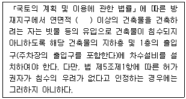
- 3000 m2
- 5000 m2
- 10000 m2
- 20000 m2
(정답률: 50%)
94. 건축법령상 아파트의 정의로 가장 알맞은 것은?
- 주택으로 쓰는 층수가 3개 층 이상인 주택
- 주택으로 쓰는 층수가 5개 층 이상인 주택
- 주택으로 쓰는 층수가 7개 층 이상인 주택
- 주택으로 쓰는 층수가 10개 층 이상인 주택
(정답률: 80%)
95. 부설주차장의 설치대상 시설물이 업무시설인 경우 설치기준으로 옳은 것은? (단, 외국공관 및 오피스텔은 제외)
- 시설면적 100m2 당 1대
- 시설면적 150m2 당 1대
- 시설면적 200m2 당 1대
- 시설면적 350m2 당 1대
(정답률: 67%)
96. 문화 및 집회시설 중 공연장의 개별관람실을 다음과 같이 계획하였을 경우, 옳지 않은 것은? (단, 개별관람실의 바닥면적은 1000m2 이다.)
- 각 출구의 유효너비는 1.5m 이상으로 하였다.
- 관람실로부터 바깥쪽으로의 출구로 쓰이는 문을 밖여닫이로 하였다.
- 개별관람실의 바깥쪽에는 그 양쪽 및 뒤쪽에 각각 복도를 설치하였다.
- 개별관림실의 출구는 3개소 설치하였으며 출구의 유효너비의 합계는 4.5m로 하였다.
(정답률: 63%)
97. 용도지역의 세분 중 도심∙부도심의 상업기능 및 업무기능의 확충을 위하여 필요한 지역은?
- 유통상업지역
- 근린상업지역
- 일반상업지역
- 중심상업지역
(정답률: 62%)
98. 층수가 15층이며, 6층 이상의 거실면적의 합계가 15000m2 인 종합병원에 설치하여야 하는 승용 승강기의 최소 대수는? (단, 8인승 승용승강기의 경우)
- 6대
- 7대
- 8대
- 9대
(정답률: 53%)
99. 국토의 계획 및 이용에 관한 법령상 기반시설 중 광장의 세분에 해당하지 않는 것은?
- 옥상광장
- 일반광장
- 지하광장
- 건축물부설광장
(정답률: 55%)
100. 다음 중 제1종 전용주거지역안에서 건축할 수 있는 건축물에 속하지 않는 것은? (단, 도시∙군계획조례가 정하는 바에 의하여 건축할 수 있는 건축물 포함)
- 노유자시설
- 공동주택 중 아파트
- 교육연구시설 중 고등학교
- 제2종 근린생활시설 중 종교집회장
(정답률: 75%)